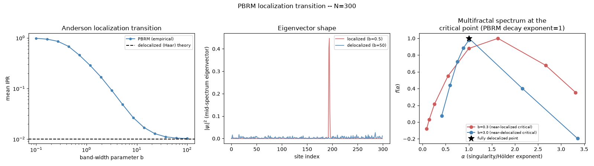

Note
Go to the end to download the full example code.
Anderson Localization in Power-Law Banded Matrices#
The power-law banded random matrix (PBRM) ensemble is a real symmetric \(n \times n\) matrix whose off-diagonal entry variance decays with distance from the diagonal as
with band-width parameter \(b\) and decay exponent \(\alpha\) (default \(\alpha=1\), the multifractal critical point used here). Small \(b\) confines the effective coupling to nearby sites, producing Anderson-localized eigenstates; large \(b\) recovers an ordinary (unbanded) GOE-like matrix with fully delocalized eigenstates. The diagnostic is the inverse participation ratio of a normalized eigenvector \(\psi\),
which is \(O(1)\) (system-size independent) for a localized state concentrated on a few sites, and \(O(1/n)\) for a delocalized one spread evenly over all \(n\) sites. The delocalized reference value is the exact mean IPR of a Haar-distributed unit vector at Dyson index \(\beta\),
which for \(\beta=1\) (real, GOE-type vectors) reduces to \(3/(n+2)\). This example reproduces the Anderson localization transition in the power-law banded random matrix (PBRM) ensemble: the inverse participation ratio (IPR) drops from O(1) (localized, small band-width b) toward the delocalized Haar-vector theory value as b grows.
Reference: A. D. Mirlin, Y. V. Fyodorov, F.-M. Dittes, J. Quezada, T. H. Seligman, Phys. Rev. E 54 (1996) 3221.
- Run:
python examples/paper_replications/localization_demo.py

Saved localization_replication.png
import matplotlib.pyplot as plt
import numpy as np
import physicskit.rmt as rmt
N = 300
N_SAMPLES = 10
SEED = 2026
fig, axes = plt.subplots(1, 3, figsize=(16, 4.5))
b_values = np.logspace(-1, 2, 15)
ipr_means = []
for b in b_values:
ensemble = rmt.ensembles.PowerLawBandedEnsemble(n=N, b=b, alpha=2.0, seed=SEED)
spectrum = ensemble.sample(n_samples=N_SAMPLES, return_eigenvectors=True)
ipr_means.append(rmt.stats.inverse_participation_ratio(spectrum.eigenvectors).mean())
theory = rmt.stats.ipr_theory(N, beta=1)
axes[0].loglog(b_values, ipr_means, "o-", ms=4, color="steelblue", label="PBRM (empirical)")
axes[0].axhline(theory, color="k", ls="--", lw=1.5, label="delocalized (Haar) theory")
axes[0].set_xlabel("band-width parameter b")
axes[0].set_ylabel("mean IPR")
axes[0].set_title("Anderson localization transition")
axes[0].legend(fontsize=8)
# Eigenvector "shape" comparison: a localized state (small b) concentrates
# on a handful of sites, a delocalized one (large b) spreads over all n.
cases = [
(0.5, "indianred", "localized (b=0.5)"),
(50.0, "steelblue", "delocalized (b=50)"),
]
for b, color, label in cases:
ensemble = rmt.ensembles.PowerLawBandedEnsemble(n=N, b=b, alpha=2.0, seed=SEED)
spectrum = ensemble.sample(n_samples=1, return_eigenvectors=True)
mid = N // 2
weights = np.abs(spectrum.eigenvectors[0][:, mid]) ** 2
axes[1].plot(weights, color=color, label=label, alpha=0.8)
axes[1].set_xlabel("site index")
axes[1].set_ylabel(r"$|\psi_i|^2$ (mid-spectrum eigenvector)")
axes[1].set_title("Eigenvector shape")
axes[1].legend(fontsize=8)
# --- Panel 3: multifractal singularity spectrum f(alpha) ---
# At the ensemble's default decay exponent alpha=1 (unrelated to the
# f(alpha) "alpha" below -- both symbols are standard in their own
# literatures), PBRM sits at a genuine multifractal critical point for
# ANY band-width b, with critical statistics that vary continuously
# with b (see physicskit.rmt.ensembles.banded). rmt.stats.singularity_spectrum
# estimates the Legendre transform f(alpha) of the mass exponent
# tau(q) from finite-size scaling of the generalized IPR -- a genuinely
# richer probe of the eigenvector statistics than the single mean-IPR
# curve in panel 1, since it resolves how MULTIPLE moments q of the
# wavefunction weights scale with system size, not just q=2.
n_values_mf = [80, 120, 180, 260]
q_values = np.array([-1.0, -0.5, 0.0, 0.5, 1.0, 1.5, 2.0, 3.0])
for b_mf, color, mf_label in [
(0.3, "indianred", "b=0.3 (near-localized critical)"),
(3.0, "steelblue", "b=3.0 (near-delocalized critical)"),
]:
def factory(n: int, seed: int | np.random.Generator | None = None, b_mf: float = b_mf) -> rmt.ensembles.PowerLawBandedEnsemble:
return rmt.ensembles.PowerLawBandedEnsemble(n=n, b=b_mf, seed=seed)
mf_alpha, f_alpha = rmt.stats.singularity_spectrum(factory, n_values_mf, q_values, n_samples=10, seed=SEED)
axes[2].plot(mf_alpha, f_alpha, "o-", color=color, label=mf_label)
axes[2].plot(1.0, 1.0, "k*", ms=12, label="fully delocalized point")
axes[2].set_xlabel(r"$\alpha$ (singularity/Hölder exponent)")
axes[2].set_ylabel(r"$f(\alpha)$")
axes[2].set_title("Multifractal spectrum at the\ncritical point (PBRM decay exponent=1)")
axes[2].legend(fontsize=7)
fig.suptitle(f"PBRM localization transition -- N={N}")
fig.tight_layout()
out_path = "localization_replication.png"
fig.savefig(out_path, dpi=150)
print(f"Saved {out_path}")
Total running time of the script: (0 minutes 2.163 seconds)